Proprietary to General Electric Company
Direction 5670006, Rev# 1
Discovery MR750w GEM Service Methods
Module Version 8.0, Version Date 10/18/11
Proprietary to General Electric Company |
| Required Persons | Preliminary Reqs | Procedure | Finalization |
|---|---|---|---|
| 1 | Not Applicable | See Procedure Overview below | 20 mins |
FRU level components in the LPCA are:
LPCA Cover: Procedure Timing-10 minutes
A-Port Bezel: Procedure Timing-30 minutes
LED & Switch Harness: Procedure Timing-20 minutes
Cradle Latch: Procedure: Timing-15 minutes
Sub-D Plate: Procedure: Timing-45 minutes
| Item | Qty | Effectivity | Part# | Manufacturer | |
|---|---|---|---|---|---|
| Non-Magnetic Service Tool Kit | 1 | - | 5112581 | - | |
| Item | Qty | Effectivity | Part# | Manufacturer | |
|---|---|---|---|---|---|
| DVMR LPCA (Multiple) | 1 each | - | See FRU Manual | - | |
| LPCA Cover | 1 each | - | See FRU Manual | - | |
| A-Port Bezel | 1 each | - | See FRU Manual | - | |
| LED & Switch Harness | 1 each | - | See FRU Manual | - | |
| Sub-D Plate | 1 each | - | See FRU Manual | - | |
| ||||
| Strong Magnetic Field! | ||||
| Ferrous materials can become dangerous projectiles in the presence of the magnetic field Produced by the Magnet. | ||||
| Do not Bring any ferromagnetic tools or equipment into the magnet room. |
| ||||
| Electrical Hazard! | ||||
| Strong voltages are present in or around the LPCA when energized. | ||||
| Remove power from the LPCA at the pdu. then lockout and tagout the pdu. |
At the Operator Control Panel (OCP), Drive the LPCA and Cradle through the magnet bore to within 1 foot (30 cm) from the end of the Rear Bridge.
This should provide enough room to work on the LPCA.
The LPCA will not move if the Patient Table is disconnected or not at the high limit prior to LPCA movement.
At the foot of the table, twist or squeeze the Cradle Release Handle to detach the Cradle from the LPCA. Pull the Cradle by hand to the Home position so it is fully retracted onto the Patient Table.
Undock the Patient Table and move it away from the Magnet.
Remove the four screws on the top of the LPCA cover..
Illustration 1: LPCA Cover Screws
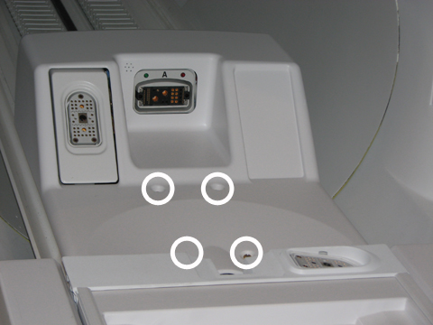
Remove the cover.
| NOTE: | To remove the cover, slide it slightly forward and lift the front of the LPCA to clear the hardware and then slide back and up. |
Place the new cover on the LPCA Assembly starting at the rear and then the front. Take care to not pinch any of the wires in the rear of the LPCA.
Attach the cover with the four screws.
Re-Docking the Patient Table will drive the LPCA to the Home Position and reattach to the Cradle/Patient Table. Dock the table by pressing the mechanical docking pedal. Tables equipped with P-connectors or GEM coil must next engage electrical dock connector by pressing the middle foot pedal shown below:
Illustration 2: Electronic Docking Pedal
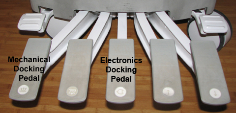
Remove the LPCA cover (see Removing and Replacing the LPCA Cover).
| ||||
| PAY CLOSE ATTENTION TO THE ROUTING OF THE BEZEL CABLES BEFORE DISCONNECTING. YOU NEED TO RECREATE THE ROUTING PATTERNS WHEN RECONNECTING THE CABLES. | ||||
Behind the A-Port Bezel, disconnect all cable connections (J1, J2, J4, and J5) from the Sub-D (or Bulkhead) Plate. A 3/16 Nut Driver is required to remove J1 and J2.
Illustration 3: A-Port Bezel Cables
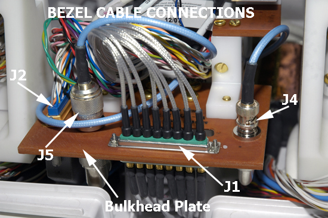
To remove the microphone cable, pull out the silver block attached to the end of the microphone cable from behind the mic bracket.
Illustration 4: Mic Cable Path

Remove the LEDs from the Bezel. Be careful not to disconnect the cable from the LEDs.
Illustration 5: Removing LED from LED & Switch Harness
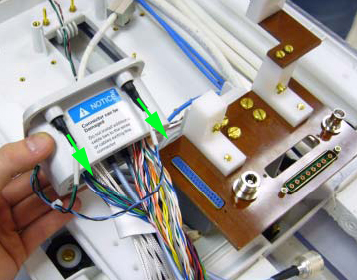
| NOTE: | Reuse the LEDs from the old A-Port Bezel. |
To remove the A-Port Bezel from the Sub-D Plate, remove two brass pan head screws (left and right) from the plate bracket at the rear of the A-Port Bezel.
Illustration 6: A-Port Bezel Screws

| ||||
| Strong Magnetic Field! | ||||
| Ferrous materials can become dangerous projectiles in the presence of the magnetic field Produced by the Magnet. | ||||
| Do not Bring any ferromagnetic tools or equipment into the magnet room. Perform insertion of leds into bezel sockets outside of magnet room if possible. |
To replace the LED into the socket of the new A-Port Bezel, use a small slotted screwdriver to push the LED into place making sure the LED is flush with the face of the bezel.
Illustration 7: A-Port Bezel LED Connections
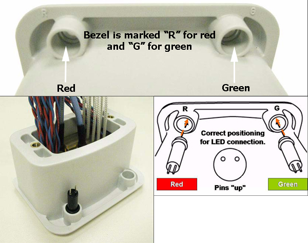
Attach the new bezel to the Sub-D Plate by replacing the brass pan head screws (left and right). See Illustration 6.
To properly reconnect all cables, do the following:
Spread the two sections of wire on J2 and feed J1 though the separation as shown.
Illustration 8: Bezel Cable Routing - A
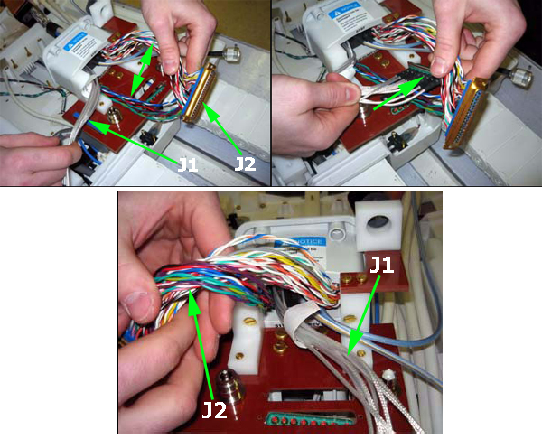
Leave J1 lying straight out, then rotate J2 counter-clockwise as needed until it meets up properly with J2 through the Sub-D Plate. Push the two connectors together and then secure them using 3/16 inch nuts and a 3/16 inch nut driver.
Illustration 9: Bezel Cable Routing - B
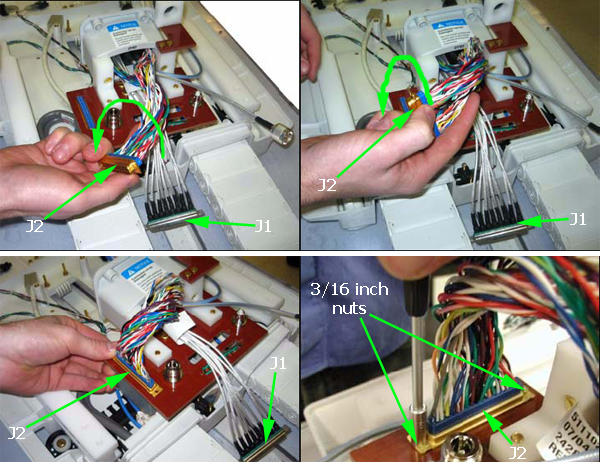
Connect J5 to the N Bulkhead Adapter on the Sub-D Plate, as shown.
Illustration 10: Bezel Cable Routing - C
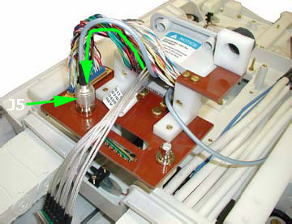
Connect J1 to J1, through the Sub-D Plate, as shown. Push the two connectors together and then secure them using 3/16 inch nuts and a 3/16 inch nut driver.
Illustration 11: Bezel Cable Routing - D
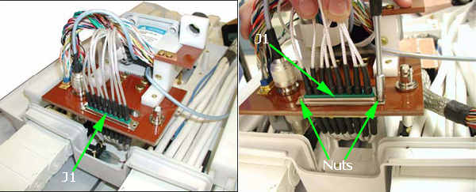
Feed J4 between J1 and J5 as shown. Then wrap J4 around the front of the Sub-D Plate ensuring that it routes below the bezel. Connect J4 to the BNC Bulkhead Adapter on the top of the Sub-D Plate, as shown.
Illustration 12: Bezel Cable Routing - E
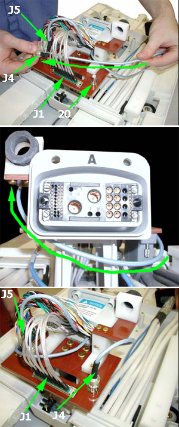
Verify that the cables are routed and connected as shown in Illustration 3.
Replace the Mic cable into the Mic bracket. See Illustration 4.
Replace the LPCA cover (see Removing and Replacing the LPCA Cover).
Remove the LPCA cover (see Removing and Replacing the LPCA Cover).
Illustration 13: Front of LPCA, LED & Switch Harness Connection Points
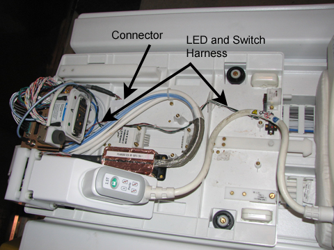
In the middle of the LPCA near the drive belt well, disconnect the LED & Switch Harness from the Cable Track A connection.
At the rear of the LPCA, remove LEDs from the top of the A-Port Bezel. Be careful not to disconnect the cable from the LEDs.
Illustration 14: Rear of LPCA & Switch Harness Connection Points
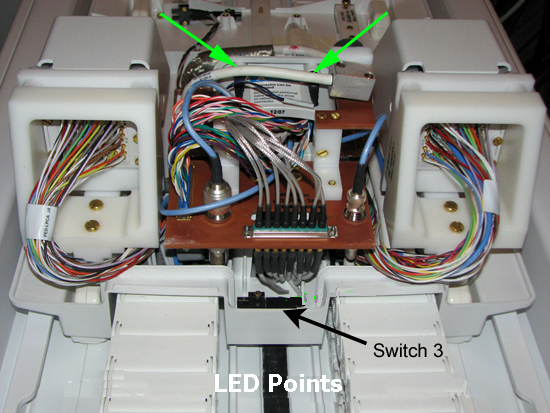
Remove all screws holding all three switches (switches 1 and 2 are in the front of the LPCA and switch 3 is in the rear of the LPCA).
Illustration 15: Switch Locations
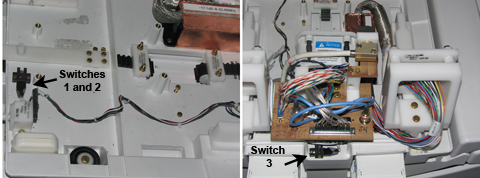
Remove the harness.
Replace the switches, label side visible at front and rear of the LPCA, then to the Cable Track A connection in the middle, and then reinstall the LEDs.
Replace the LPCA cover (see Removing and Replacing the LPCA Cover).
Remove the LPCA cover (see Removing and Replacing the LPCA Cover).
Remove the four brass slotted head screws at the base of the cradle latch.
Illustration 16: LPCA Cradle Latch
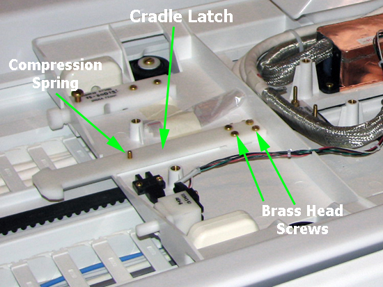
On the bottom side of the latch, use a standard head screwdriver to remove the Compression Spring screw.
To reassemble the new cradle latch, reverse Steps 4-5 above.
Replace the LPCA cover (see Removing and Replacing the LPCA Cover).
The Sub-D Plate contains two components- A-Port Bezel and microphone. In order to replace the Sub-D Plate, both components and their respective cable connections must be completely removed.
Remove the LPCA cover (see Removing and Replacing the LPCA Cover).
| ||||
| VERY IMPORTANT!! AFTER DISCONNECTING THE BEZEL CABLE CONNECTIONS, TRY TO LEAVE THE ROUTING OF THE CABLES IN PLACE AS MUCH AS POSSIBLE. THIS WILL HELP SPEED UP THE REPLACEMENT PROCESS. EQUALLY IMPORTANT IS NOT TO DISLODGE, MOVE, OR DISTURB OTHER CABLE CONNECTIONS ASSOCIATED WITH THE SUB-D PLATE, LIKE THE J2 CONNECTOR AND MIC CABLE. | ||||
To remove the A-Port Bezel and all of its cable connections on the top of the Sub-D Plate, refer to Removing the A-Port Bezel, Steps 4-7.
| NOTE: | Removal of the adapter connections on the bottom of the Sub-D Plate is described in Step 7 below. |
To remove the microphone cable, pull out the silver cable block from behind the mic bracket. See Illustration 4.
After removing and setting aside the A-Port Bezel and its cables (See Notice associated with Step 4 above), remove the Sub-D Plate screws. See Illustration 6.
On the bottom of the Sub-D Plate, remove cable connections, and then use a 16 mm non-ferrous combination wrench and a 3/4 inch non-ferrous combination wrench to remove both bulkhead adapters. See Illustration 17.
On the replacement Sub-D Plate, reattach cable connections and bulkhead adapters on the bottom of the plate.
Illustration 17: Bottom of Sub-D (or Bulkhead) Plate
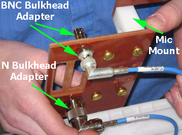
To reattach the Sub-D Plate to the LPCA assembly, do the following:
Leave the Mic cable (silver cable block) lying straight making sure that it is on top of J1, J4, & J5 and not connected.
Illustration 18: Reattaching the Sub-D Plate and J2 Connector
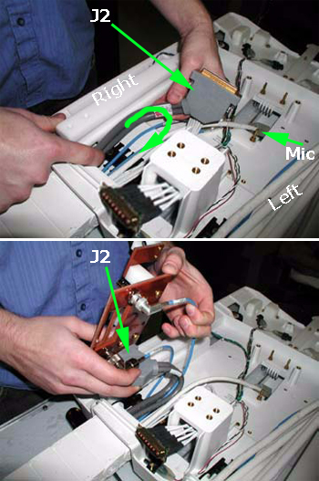
Position J2 to the right side of the cable track and curl it until the connector is turned 180 degrees. Then locate J2 into its slot on the Sub-D Plate as shown and move the plate down towards its mounting position while holding J2 in place.
Locate the J1 connector into its slot. See Illustration 3 and Illustration 11.
Reattach the four Sub-D Plate screws. See Illustration 6.
To reattach the A-Port Bezel and its cables, see Replacing the A-Port Bezel, Steps 3-5.
Replace the Mic cable into the Mic bracket. See Illustration 4.
Replace the LPCA cover (see Removing and Replacing the LPCA Cover).
Run Coil Datapath Diagnostics tool (see Coil Datapath Diagnostic (CDD)).
Do a test scan to verify system operation (see Check Scan).